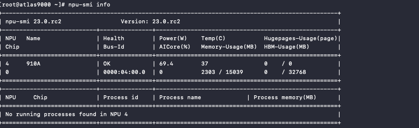
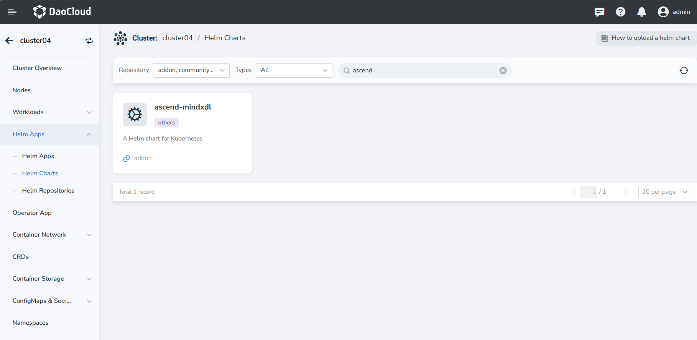
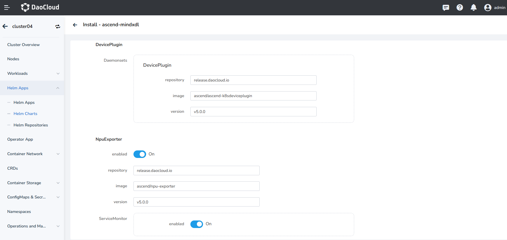
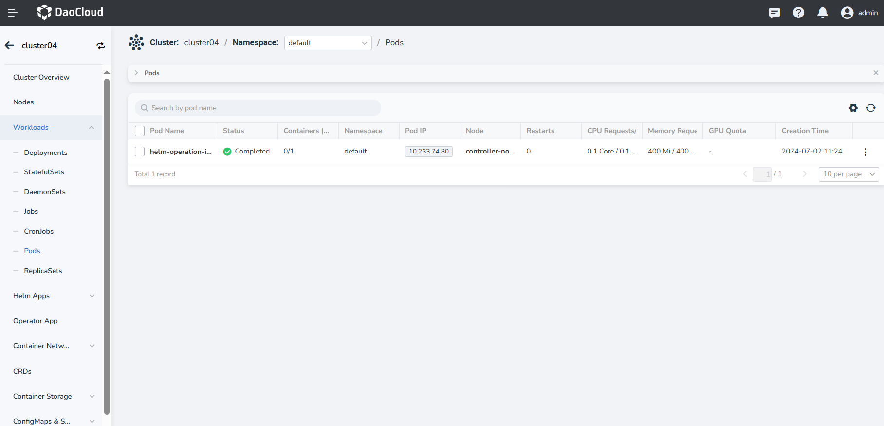
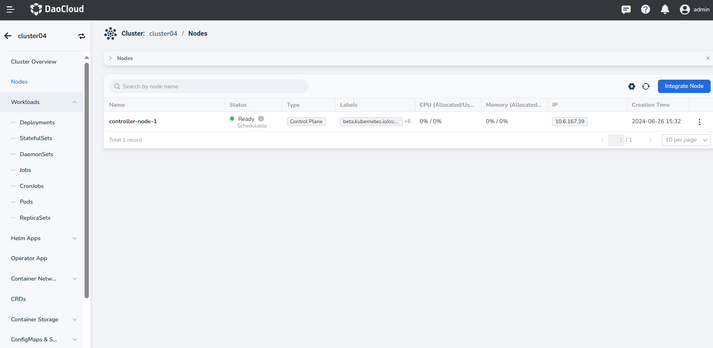

Installation of Ascend NPU Components¶
This chapter provides installation guidance for Ascend NPU drivers, Device Plugin, NPU-Exporter, and other components.
Prerequisites¶
- Before installation, confirm the supported NPU models. For details, refer to the Ascend NPU Matrix.
- Ensure that the kernel version required for the proper NPU model is compatible. For more details, refer to the Ascend NPU Matrix.
- Prepare the basic Kubernetes environment.
Installation Steps¶
Before using NPU resources, you need to complete the firmware installation, NPU driver installation, Docker Runtime installation, user creation, log directory creation, and NPU Device Plugin installation. Refer to the following steps for details.
Install Firmware¶
- Confirm that the kernel version is within the range proper to the "binary installation" method, and then you can directly install the NPU driver firmware.
- For firmware and driver downloads, refer to: Firmware Download Link
- For firmware installation, refer to: Install NPU Driver Firmware
Install NPU Driver¶
- If the driver is not installed, refer to the official Ascend documentation for installation. For example, for Ascend910, refer to: 910 Driver Installation Document.
- Run the command
npu-smi info, and if the NPU information is returned normally, it indicates that the NPU driver and firmware are ready.

Install Docker Runtime¶
-
Download Ascend Docker Runtime
Community edition download link: https://www.hiascend.com/zh/software/mindx-dl/community
wget -c https://mindx.obs.cn-south-1.myhuaweicloud.com/OpenSource/MindX/MindX%205.0.RC2/MindX%20DL%205.0.RC2/Ascend-docker-runtime_5.0.RC2_linux-x86_64.runInstall to the specified path by executing the following two commands in order, with parameters specifying the installation path:
-
Modify the containerd configuration file
If containerd has no default configuration file, execute the following three commands in order to create the configuration file:
mkdir /etc/containerd containerd config default > /etc/containerd/config.toml vim /etc/containerd/config.tomlIf containerd has a configuration file:
Modify the runtime installation path according to the actual situation, mainly modifying the runtime field:
... [plugins."io.containerd.monitor.v1.cgroups"] no_prometheus = false [plugins."io.containerd.runtime.v1.linux"] shim = "containerd-shim" runtime = "/usr/local/Ascend/Ascend-Docker-Runtime/ascend-docker-runtime" runtime_root = "" no_shim = false shim_debug = false [plugins."io.containerd.runtime.v2.task"] platforms = ["linux/amd64"] ...Execute the following command to restart containerd:
Create a User¶
Execute the following commands on the node where the components are installed to create a user.
# Ubuntu operating system
useradd -d /home/hwMindX -u 9000 -m -s /usr/sbin/nologin hwMindX
usermod -a -G HwHiAiUser hwMindX
# CentOS operating system
useradd -d /home/hwMindX -u 9000 -m -s /sbin/nologin hwMindX
usermod -a -G HwHiAiUser hwMindX
Create Log Directory¶
Create the parent directory for component logs and the log directories for each component on the proper node, and set the appropriate owner and permissions for the directories. Execute the following command to create the parent directory for component logs.
Execute the following command to create the Device Plugin component log directory.
Note
Please create the proper log directory for each required component. In this example, only the Device Plugin component is needed. For other component requirements, refer to the official documentation
Create Node Labels¶
Refer to the following commands to create labels on the proper nodes:
# Create this label on computing nodes where the driver is installed
kubectl label node {nodename} huawei.com.ascend/Driver=installed
kubectl label node {nodename} node-role.kubernetes.io/worker=worker
kubectl label node {nodename} workerselector=dls-worker-node
kubectl label node {nodename} host-arch=huawei-arm // or host-arch=huawei-x86, select according to the actual situation
kubectl label node {nodename} accelerator=huawei-Ascend910 // select according to the actual situation
# Create this label on control nodes
kubectl label node {nodename} masterselector=dls-master-node
Install Device Plugin and NpuExporter¶
Functional module path: Container Management -> Cluster, click the name of the target cluster, then click Helm Apps -> Helm Charts from the left navigation bar, and search for ascend-mindxdl.


- DevicePlugin: Provides a general device plugin mechanism and standard device API interface for Kubernetes to use devices. It is recommended to use the default image and version.
- NpuExporter: Based on the Prometheus/Telegraf ecosystem, this component provides interfaces to help users monitor the Ascend series AI processors and container-level allocation status. It is recommended to use the default image and version.
- ServiceMonitor: Disabled by default. If enabled, you can view NPU-related monitoring in the observability module. To enable, ensure that the insight-agent is installed and running, otherwise, the ascend-mindxdl installation will fail.
- isVirtualMachine: Disabled by default. If the NPU node is a virtual machine scenario, enable the isVirtualMachine parameter.
After a successful installation, two components will appear under the proper namespace, as shown below:

At the same time, the proper NPU information will also appear on the node information:

Once everything is ready, you can select the proper NPU device when creating a workload through the page, as shown below:
Note
For detailed information of how to use, refer to Using Ascend (Ascend) NPU.